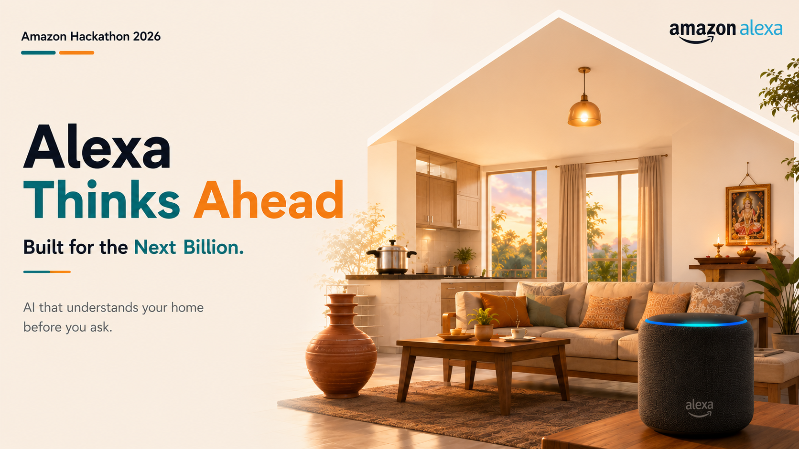

Alexa that learns the rhythm of an Indian home and acts before anyone asks — every action explained, every liberty earned.
“Alexa, you should already know this.” — a multi-generational household issues dozens of commands a day to devices that never learn what happens next.
"Alexa, turn on the geyser" — every single morning. The assistant obeys, but the hot water is still 20 minutes late.
It doesn't know a power cut is different during a child's online class, or that grandparents bathe before everyone wakes.
No explanations, no way to correct it — so families keep automation switched off and do everything by hand.
It acts ahead of the routine — the geyser is hot before the 6:45 bath, the living room is cool before Rajesh walks in. Zero commands for the daily rhythm.
India-first context, not hardcoded rules — pooja mornings, tariff windows, power cuts, tuition hours all ride into the reasoning as context it actually weighs.
Autonomy is graduated and earned — five trust tiers per device category; one override immediately lowers what it may do on its own.
Every action ships with a plain-language reason — "pre-heating the geyser at 05:15, the family wakes around 06:00" — and a one-tap Override.
And quietly, a fifth: privacy — the routines are learned from the home's own history, and they stay the home's.
One loop runs all day — SENSE → THINK → ACT → EXPLAIN — slow-learned trends meeting today's context in the reasoning core.
routines learned from one week of the family's own activity log — six members, zero hand-written rules
of head start — the geyser starts heating before the family is even awake, ready right at bath time
proactive actions before 7 AM by day 30 — water motor, geyser, locks — with zero commands spoken
of flexible load moved off the peak-tariff window, simply by acting earlier (simulated-day estimate)
And for Amazon: anticipation is what turns Alexa from convenient into indispensable — deeper retention, a stronger pull into the Echo ecosystem, and trust no assistant has earned yet.
Hear the pressure-cooker whistle and the water-motor hum — context from sound and power signatures, no new hardware.
Proactive suggestions in the language the household actually speaks, member by member.
Routine learning moves on-device; only anonymised patterns ever reach the cloud.
Matter ecosystem support and society-level insight: a colony that pre-arms for the 14:00 power cut together.
An Alexa that earns trust, one morning chai at a time.